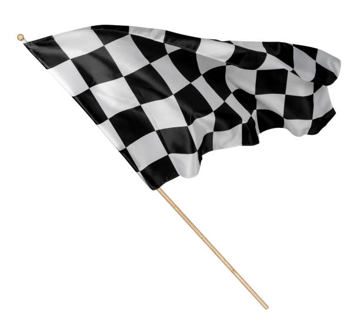
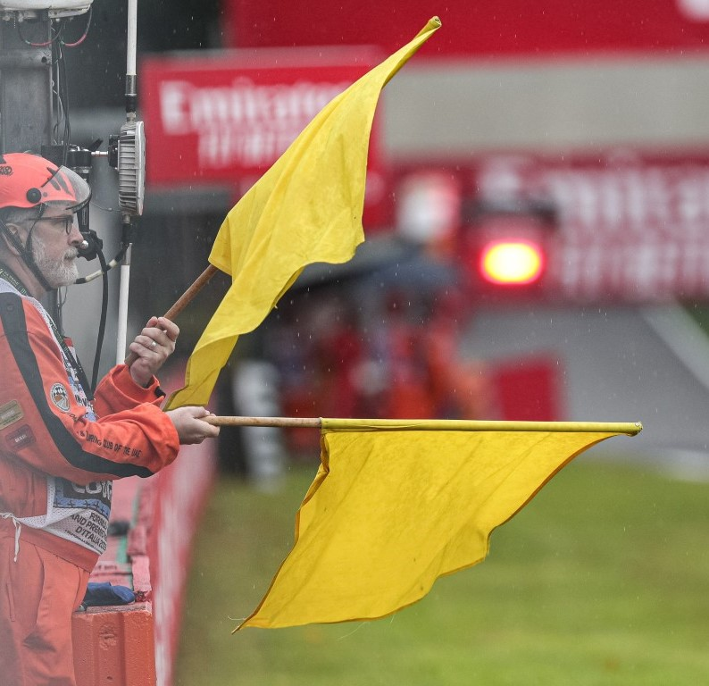
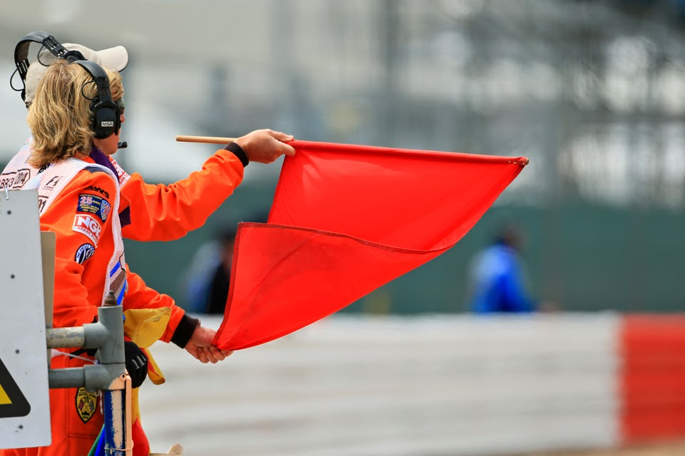
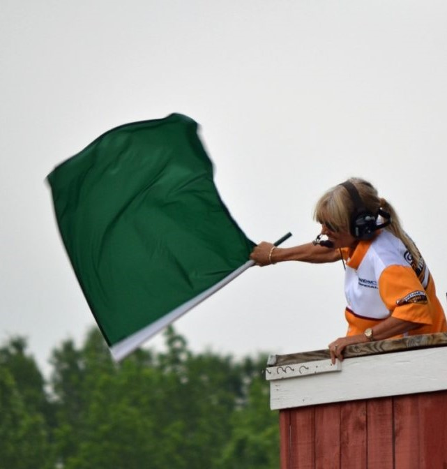
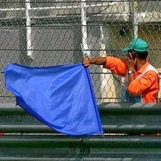
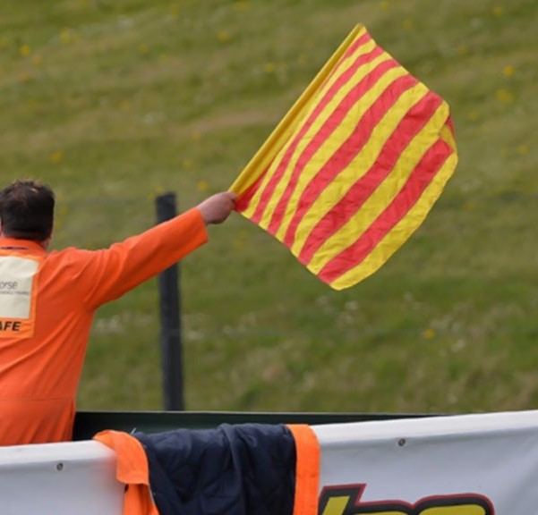
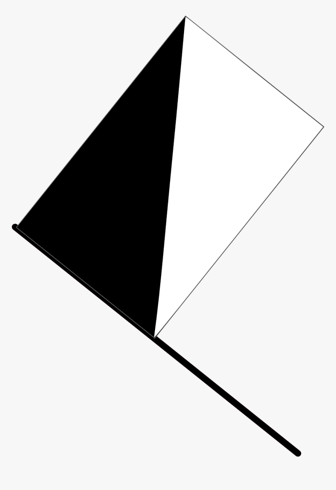
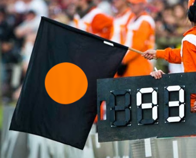

|  |
Chequered Flag: You’ll all know this one! This flag is waved to signal that any session, whether it be practice, qualifying or a race, has come to an end. It is the greatest sight of all for a driver who reaches it in first place in a grand prix, because it means they are the winner. |
|  |
Yellow Flag: Used to alert drivers to a hazard on or near the track. Drivers should'reduce their speed, do not overtake, and be prepared to change direction' because there is a hazard beside or partially on the track, according to the FIA Sporting Code. A driver faces a fine if they cannot demonstrate that they passed through the area of the yellow flag at a slower speed. |
|  |
Red Flag: Shown to signal that the session has been suspended, at which point drivers must significantly reduce their speed and return to the pit lane. Overtaking is strictly prohibited and also pointless, as if the session does resume, it will do so with drivers in the order they were in when the red flags were shown. Drivers are warned by the red flag to proceed with caution on their way back to the pits, as the track may be 'wholly blocked'. |
|  |
Green Flag: Acts as an all-clear, indicating that any incident which was causing a single or double waved yellow has now been resolved. At this stage, the session resumes under normal conditions. |
|  |
Blue Flag: If a driver ignores three blue flags and pase the faster cars in succession, then they risk getting a penalty. The blue flag is used to warn that a car is close behind and preparing to overtake. It will also be held stationary if at any time a driver is leaving pit lane and another car is approaching on the track. |
|
Black Flag: A rare sight in Formula 1, fortunately for the drivers, as the black flag means disqualification from the session. The flag will be shown alongside the number of the driver it is intended for, instructing them to return to the pit lane immediately and end their involvement. |
|
White Flag: Used to warn drivers that a slow-moving vehicle is ahead, such as service vehicles or the medical car. It is also used at the end of a practice session, where commonly drivers like to stop in a grid slot and practice their launches ahead of a race. |
|  |
Yellow & Red Striped Flag: Held still rather than waved and indicates an upcoming change in the track surface. Commonly it warns the driver that there is oil or water on the track ahead of the flag, meaning a drop in the level of grip, and thus an increased risk of losing control of the car without caution. |
|  |
Half Black, Half White Flag: It is used to warn a driver for unsportsmanlike behaviour, the flag is held motionless, accompanied by a display of the driver number. If a driver does not change their conduct after seeing the flag, then the next stage of action will be a penalty. |
|  |
Black with Orange Disc Flag: The black and orange flag features a black background with an orange central disk. When a car has a mechanical problem, the flag is shown to order that driver to come into the pit lane on the next lap. The flag will be accompanied by the number of that driver for identification. |

 Lewis Hamilton
Lewis Hamilton
 Michael Schumacher
Michael Schumacher
 Juan Manuel Fangio
Juan Manuel Fangio Alain Prost
Alain Prost Sebastian Vettel
Sebastian Vettel
 Jack Brabham
Jack Brabham
 Jackie Stewart
Jackie Stewart
 Fernando Alonso
Fernando Alonso
 Graham Hill
Graham Hill Kimi Räikkönen
Kimi Räikkönen